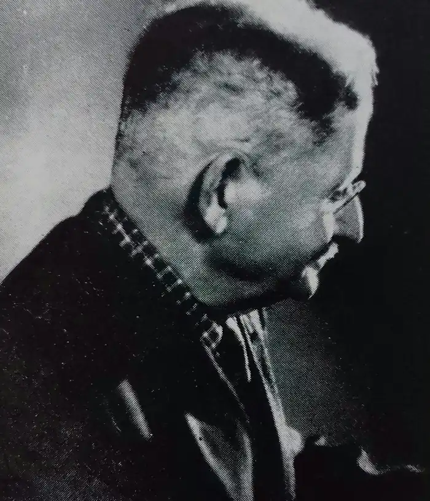

Народився 19 жовтня 1890 року у Бродах у родині шевця. Постійні нестатки змусили батька податися на заробітки за океан. Без засобів до існування, матеріально і морально скривджений, він повернувся у рідний край. Коли Володимирові пішов десятий рік, не стало матері. Через кілька місяців по тому батько привів у дім мачуху — людину прикрої вдачі. Нестатки в сім'ї змусили батька забрати сина з гімназії і віддати у виділову школу, яку закінчив 1906 року. З п'ятнадцяти років Володимир Хронович — круглий сирота. Закінчує школу і вступає до Сокальської державної вчительської семінарії, яку відмінно закінчив 1910 року.
У 1920-х роках В. Хронович часто зустрічався з Марком Черемшиною, був знайомий з дружиною письменника. Бере участь у літературному гуртку, організованому Наталією Семанюк у музеї Марка Черемшини (м. Снятин), який вона очолювала. Зустрічається з Василем Стефаником, Петром Козланюком, Іриною Вільде, Ольгою Кобилянською, Дмитром Павличком, Володимиром Самійленком, Дмитром Осічним й іншими.
1970 року його приймають у члени Спілки радянських письменників. Помер Володимир Хронович 11 листопада 1973 року.